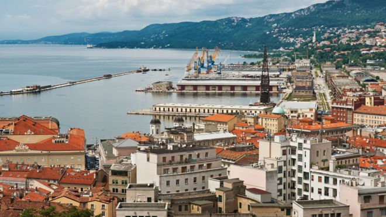
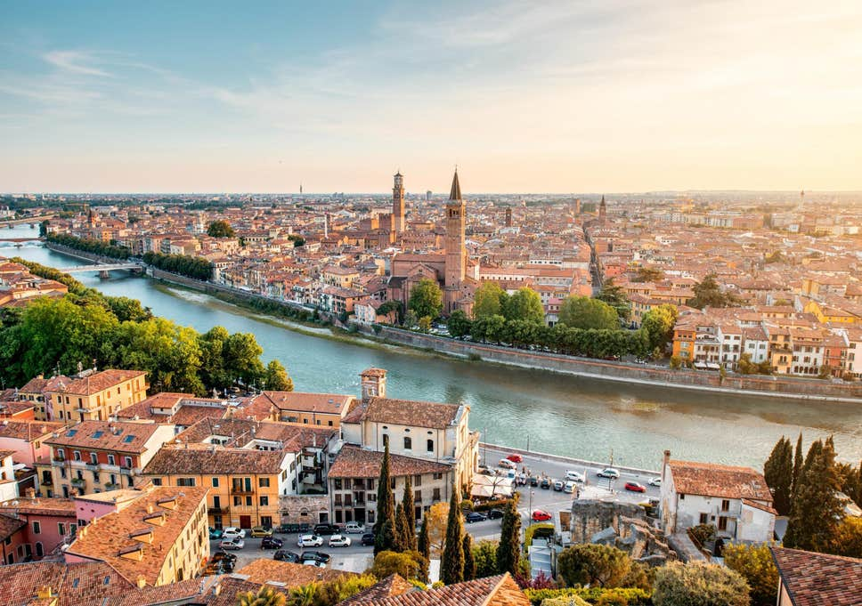

Cinque Terre
Cinque Terre is a string of centuries-old seaside villages on the rugged Italian Riviera coastline. In each of the 5 towns, colorful houses and vineyards cling to steep terraces, harbors are filled with fishing boats and trattorias turn out seafood specialties along with the Liguria region’s famous sauce, pesto. The Sentiero Azzurro cliffside hiking trail links the villages and offers sweeping sea vistas.
Manarola
Manarola is a small town, a frazione of the comune of Riomaggiore, in the province of La Spezia, Liguria, northern Italy. It is the second-smallest of the famous Cinque Terre towns frequented by tourists, with a population of 353

Trieste
Trieste is the capital city of the Friuli Venezia Giulia region in northeast Italy. A port city, it occupies a thin strip of land between the Adriatic coast and Slovenia’s border on the limestone-dominated Karst Plateau. Italian, Austro-Hungarian and Slovenian influences are all evident in its layout, which encompasses a medieval old city and a neoclassical Austrian quarter.

Verona
Verona is a city in northern Italy’s Veneto region, with a medieval old town built between the meandering Adige River. It’s famous for being the setting of Shakespeare’s "Romeo and Juliet." A 14th-century residence with a tiny balcony overlooking a courtyard is said be “Juliet’s House." The Verona Arena is a huge 1st-century Roman amphitheater, which currently hosts concerts and large-scale opera performances.
Roma
Rome is the capital city and a special comune of Italy. Rome also serves as the capital of the Lazio region. With 2,872,800 residents in 1,285 km², it is also the country's most populated comune. It is the fourth most populous city in the European Union by population within city limits.